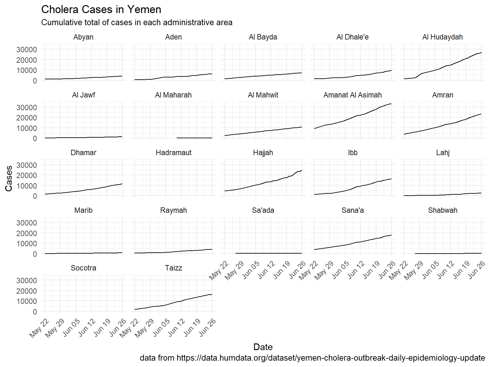

Cholera in Yemen - mapping deaths from the current epidemic using HDX in R
Mon, Jul 3, 2017Cholera in Yemen
At the time of writing this, the WHO has released information about 218798 cases of Cholera in Yemen, with 1400 deaths.
This information has been collated by the Humanitarian Data Exchange (HDX), and put online. I made a new function for hdxr the other day to make it easier to use maps from HDX, and wanted to learn more about what’s happening in Yemen.
All the information below has been taken from HDX and read into R using hdxr. The code to run it all is in this rmarkdown document
I don’t know why but mortality rates seems to vary a lot between administrative districts. Amanat Al-Asimah, containing Sana’a, Yemen’s largest city, has had the most cholera cases in the country (33349) but only 53 deaths. Whereas Hajjah, has had almost 9000 fewer cases (24566), but over four times the amount of deaths (223).
I’ve included a table showing the differing mortality rates. I don’t know enough about Cholera or Yemen to explain it, but I’d be suprised if that variation is all real. I’d assume that some regions (Raymah) are more likely to report deaths than cases, giving an increased mortality, whereas a major city like Sana’a might be more likely to report every case, bringing it’s overall mortality down.
Cholera Deaths

Cholera Cases

Cholera Deaths Table
| Administrative District | Deaths | Cases |
|---|---|---|
| Hajjah | 223 | 24566 |
| Ibb | 193 | 16489 |
| Al Hudaydah | 160 | 26893 |
| Amran | 137 | 23402 |
| Taizz | 121 | 16388 |
| Sana’a | 97 | 18145 |
Cholera Cases Table
| Administrative District | Deaths | Cases |
|---|---|---|
| Amanat Al Asimah | 53 | 33349 |
| Al Hudaydah | 160 | 26893 |
| Hajjah | 223 | 24566 |
| Amran | 137 | 23402 |
| Sana’a | 97 | 18145 |
| Ibb | 193 | 16489 |
Cholera Mortality Percentage Table
| Administrative District | Deaths | Cases | Percentage Mortality |
|---|---|---|---|
| Raymah | 64 | 3935 | 1.6264295 |
| Ibb | 193 | 16489 | 1.1704773 |
| Hajjah | 223 | 24566 | 0.9077587 |
| Al Mahwit | 93 | 10892 | 0.8538377 |
| Dhamar | 94 | 11742 | 0.8005451 |
| Taizz | 121 | 16388 | 0.7383451 |
| Al Jawf | 10 | 1388 | 0.7204611 |
| Aden | 44 | 6469 | 0.6801670 |
| Al Hudaydah | 160 | 26893 | 0.5949504 |
| Amran | 137 | 23402 | 0.5854200 |
| Marib | 4 | 728 | 0.5494505 |
| Abyan | 22 | 4086 | 0.5384239 |
| Sana’a | 97 | 18145 | 0.5345825 |
| Al Dhale’e | 51 | 9746 | 0.5232916 |
| Lahj | 13 | 2779 | 0.4677942 |
| Al Maharah | 1 | 214 | 0.4672897 |
| Sa’ada | 1 | 297 | 0.3367003 |
| Al Bayda | 19 | 7210 | 0.2635229 |
| Amanat Al Asimah | 53 | 33349 | 0.1589253 |
| Shabwah | 0 | 80 | 0.0000000 |